Home / MLP / Week 2 / Real questions
MLP week 2 - real exam questions
40 questions pulled from past papers whose wording matches this week's topics, newest first, duplicates removed. Pick your answers, then press Check answers. Figures and answer keys are the originals.
Elapsed 00:00
Determine the output of the following text preprocessing pipeline:
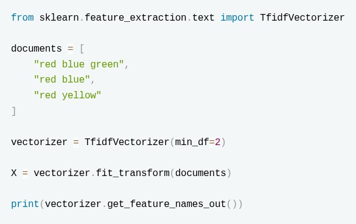
- ['red','blue','green','yellow']
- ['blue' 'red','yellow']
- ['blue' 'red']
- ['red','blue','green']
What is the output of the following preprocessing pipeline code? (Round off to 2 decimal places if applicable)
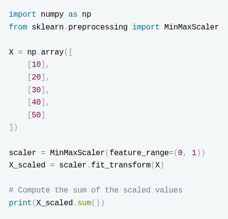
The pipeline first imputes the missing value with the (mean) strategy and then standardizes the column. What is the value of
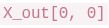
(the transformed value of the first sample, whose original value is 2)? (Enter up to 2 decimals)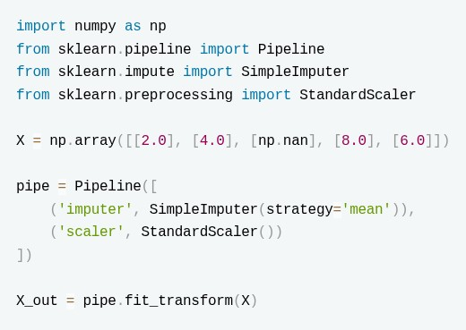
Select the false statements:
- StandardScaler ensures the features correspond to a uniform distribution after scaling.
- MinMaxScaler ensures that feature values follow a Gaussian Distribution
- OridnalEncoder is best for data which contains values corresponding to a Normal Distribution.
- Pipeline helps us apply separate transformations to numerical and categorical columns directly.
Regarding building pipelines with
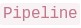
and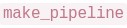
, select all statements that are correct.- Every intermediate step of a must be a transformer, i.e. it must implement both
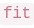
and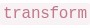
. - The final estimator of a only needs to implement .
- requires the user to supply an explicit name for each step, just like .
- A object exposes the interface (e.g.
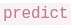
) of its last step.
Consider the following code snippet:
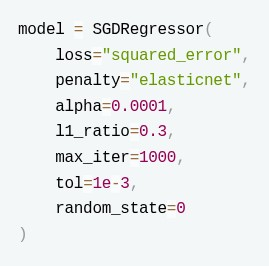
Which of the following holds true?- The model performs no regularization.
- The model performs regularization and the regularization can also perfrom some feature selection.
- The model performs regularization and the regularization cant perfrom some feature selection.
- The model is very likely to be prone to overfitting
Consider the following code snippet:
 Which of the following statements are true?
Which of the following statements are true?
Which of the following statements are true?- If the model reaches convergence in under 20 iterations, it is guaranteed that every data point is mapped to its nearest centroid.
- The value for number of clusters is a hyperparameter that can be validated using a silhouette score or the elbow method.
- The algorithm will execute a total of 20 independent runs using different starting centroid seed
- The initialization process will select 9 data points entirely at random to serve as the starting centroids.
Consider the following cross validation strategy:
 What does the above mentioned cross val strategy do?
What does the above mentioned cross val strategy do?
What does the above mentioned cross val strategy do?- LOOCV will train the model 5 times.
- LOOCV will train the model 1 time.
- The code is wrong
We create the following ml pipeline:
 Which of the following statements is true?
Which of the following statements is true?
Which of the following statements is true?- RandomizedSearchCV tries all possible combinations of hyperparameters in param_dist.
- Only 4 random combinations of hyperparameters will be tested.
- Changing random_state has no effect on the hyperparameter search results.
- Changing cv to 8 will be computationally cheaper.
You are performing hyperparameter tuning using GridSearchCV for a machine learning model. The following parameter grid is provided:
 How many unique hyperparameter combinations will GridSearchCV evaluate in total?
How many unique hyperparameter combinations will GridSearchCV evaluate in total?
How many unique hyperparameter combinations will GridSearchCV evaluate in total?Select the correct statements from the following regarding GridSearchCV:
- best_score parameter of grid search returns the mean cross validated score of all the cross validation folds.
- best_score parameter of grid search returns the max cross validated score of all the cross validation folds.
- If there are 2 parameter sets A and B with A having 3 values and B having 4 values the total parameter combinations grid search will try is 7.
- If there are 2 parameter sets A and B with A having 3 values and B having 4 values the total parameter combinations grid search will try is 12.
- No other scoring metric other than R2 score and mean_squared_error can be used as the scoring metric for GridSearchCV in case of regression problems.

- Saves computation time by reusing results of expensive transformations wheninputs and parameters have not changed.
- Helps speed up repeated runs of cross-validation involving the sametransformation steps.
- Reduces CPU usage by running transformations in parallel threadsautomatically.
- Improves efficiency in hyperparameter search by avoiding redundantcomputations in pipeline steps.
- Guarantees better generalization performance on the test set.

- It can only be used with classifiers that output probabilities.
- When voting=‘hard’, it chooses the class with the highest sum of predictedprobabilities.
- When voting=‘soft’, it averages the predicted probabilities and picks the classwith the highest probability.
- It cannot be used with Pipeline objects.
Which of the following techniques can be used for hyperparameter tuning in Ridge Regression? Select all correct options.
- GridSearchCV
- ElasticNetCV
- RandomizedSearchCV
- Mini batch gradient descent
Which of the following techniques can be used for hyperparameter tuning in SGD Regression?
- GridSearchCV
- ElasticNetCV
- SelectKBest
- Feature Scaling with StandardScaler
Which of the following is NOT a hyperparameter in machine learning?
- Learning rate in gradient descent
- Bias in a linear regression model
- Number of clusters in k-means
- Minimum leaf size in decision trees
Consider the following options for evaluating the optimal number of clusters in k-means. Which approaches are valid?
- Using an Elbow Curve.
- Computing Silhouette Scores.
- Cross-validation with multiple folds.
- All of these
Which of the following is correct about cross-validation in machine learning?
- Cross-validation helps prevent overfitting.
- It is a technique to improve the model’s accuracy.
- K-Fold cross-validation is one of the most popular types of cross-validation.
- Cross-validation is not suitable for small datasets.
Consider following parameter grid for regression with RandomForest:
 Consider following parameter grid for regression with RandomForest: How many unique combinations of hyperparameters are there in the above parameter grid?
Consider following parameter grid for regression with RandomForest: How many unique combinations of hyperparameters are there in the above parameter grid?
Consider following parameter grid for regression with RandomForest: How many unique combinations of hyperparameters are there in the above parameter grid?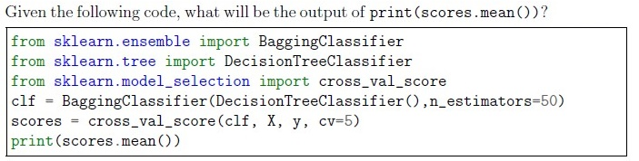
- The mean accuracy across all cross-validation folds.
- The mean precision across all cross-validation folds.
- The mean recall across all cross-validation folds.
- The mean F1 score across all cross-validation folds.
Which of the following is true about Naive Bayes algorithm ?
- It is primarily used for regression problems
- It is primarily used for classification problems
- Hyperparameter tuning is required
- Hyperparameter tuning is not required
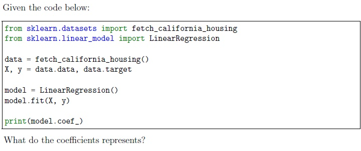
- The importance of each feature in predicting the target.
- The residuals of the model.
- The intercept of the regression line.
- It represents the values of hyperparameters of the model.
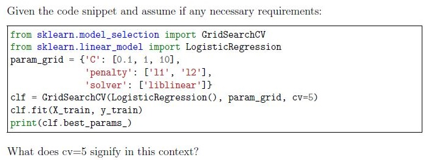
- The training data is split into 5 different datasets, each used to train a separatemodel.
- The model is trained and evaluated using 5-fold cross-validation forhyperparameter tuning
- Five different models are trained on 5 resampled datasets of training data.
- The dataset is divided into 5 parts and trained in a single pass without cross-validation.
What is the main advantage of using RandomizedSearchCV over GridSearchCV ?
- RandomizedSearchCV is always faster.
- RandomizedSearchCV evaluates all possible combinations ofhyperparameters.
- RandomizedSearchCV can sample a larger hyperparameter space with feweriterations.
- RandomizedSearchCV always finds the best model.
What is the purpose of k-fold cross-validation ?
- To split data into training and testing sets.
- To tune hyperparameters.
- To evaluate model performance on multiple subsets.
- To preprocess data.
Which of the following approaches is(are) helpful to find a good value for k in k−means clustering algorithm?
- Plotting an Elbow curve.
- Using classifiers before making clusters.
- Plotting Silhouette coefficient for various values of k.
- Using k-fold cross validation
You’re building a machine learning pipeline to preprocess data and train a model on a classification task. You decide to use a pipeline that includes data preprocessing and a support vector machine (SVM) classifier. The following code snippet demonstrates the pipeline creation and usage:
 You’re building a machine learning pipeline to preprocess data and train a model on a classification task. You decide to use a pipeline that includes data preprocessing and a support vector machine (SVM) classifier. The following code snippet demonstrates the pipeline creation and usage: What is the purpose of using the pipeline in this code snippet?
You’re building a machine learning pipeline to preprocess data and train a model on a classification task. You decide to use a pipeline that includes data preprocessing and a support vector machine (SVM) classifier. The following code snippet demonstrates the pipeline creation and usage: What is the purpose of using the pipeline in this code snippet?
You’re building a machine learning pipeline to preprocess data and train a model on a classification task. You decide to use a pipeline that includes data preprocessing and a support vector machine (SVM) classifier. The following code snippet demonstrates the pipeline creation and usage: What is the purpose of using the pipeline in this code snippet?- The pipeline combines multiple models for better model performance.
- The pipeline allows for simultaneous training of the scaler and classifier.
- The pipeline simplifies the code by encapsulating preprocessing and modelingsteps.
- The pipeline ensures that only linear SVM can be used for this classificationtask.

- Faster to compute the list of neighbors on scaled data.
- k-nearest neighbors is based on computing some distances. Features need tobe normalized to contribute approximately equally to the distance computation.
- Scaling the data has a negligible effect on k-nearest neighbor’s performance,but it enhances the interpretability of the model.
- This is irrelevant. One could use k-nearest neighbors without normalizing thedataset and get a very similar cross-validation score.
Which of the following code snippets represent correct methods to obtain cross validated performance measure using LeaveOneOut?


Choose the options with respect to the given statements: Statement1 : To apply various sklearn methods from in series on a column we should use Pipeline. Statement2 : To apply various sklearn methods on various columns in parallel we should use ColumnTransformer.
- Statement 1 False, Statement 2 False
- Statement 1 True, Statement 2 False
- Statement 1 False, Statement 2 True
- Both statements are True

- The pipeline will generate polynomial features (including squared terms) andthen scale these features to a range between 0 and 1.
- The transformed data will consist of the original features, their squares, andinteraction terms, all scaled between 0 and 1.
- The pipeline scales the original features between 0 and 1, then subsequentlygenerates polynomial combinations including both square terms and interaction terms.
- Only interaction terms between features are generated by the pipeline, whichare then scaled between 0 and 1, without including the squared terms of individual features.

- Optimize the model’s complexity by automatically determining the best αthrough cross-validation.
- Reduce overfitting by incorporating 10-fold cross-validation during modelselection.
- Make predictions using an ensemble of 10 different Lasso models trained ondifferent subsets of the data.
- Maximize the number of features retained in the model, ensuring a complexmodel representation.
You’re working on a binary classification problem where the dataset is relatively small, and you suspect that a linear decision boundary will work well due to distinct class separation. Additionally, you want to perform logistic regression with L1 regularization for improved feature selection. Which solver is most appropriate for this scenario?
- Newton-CG
- SGD
- LBFGS
- Liblinear
Which of the following is a hyperparameter?
- L1-ratio in elasticnet
- Pruning parameter in a decision tree
- Learning rate in SGDRegressor
- All of these
Which of the following APIs only supports conjoining transformers and estimators in series (i.e. one after another)?
- Pipeline
- ColumnTransformer
- FeatureUnion
- All of these
Which of the following ways can help in feature selection?
- Drop a Feature with many missing values
- Drop a feature containing data with high standard deviation
- Use SelectKBest or SelectKPercentile methods
- Drop a feature which has high correlation with target variable
Brajesh wants to tune hyper parameters of an AdaBoost model for a classification problem with following specifications: 1. Base estimator as Decision trees classifier with max_depth=1. 2. Number of estimators range from 30 to 40 (both inclusive) at the interval of 1. 3. Cross validation = 5. 4. Learning rate must vary between 0.2 to 2.0 (both inclusive) at the intervals of 0.2. 5. Train the best model on the entire training set. 6. Print score on test set. Which of the following code blocks will correctly execute Brajesh’s task? [Note: Assume necessary imports and variables for training and test sets.]


Rajesh wants to tune hyper parameters of an AdaBoost model for a classification problem with following specifications: 1. Base estimator as Decision trees classifier with max_depth=1. 2. Number of estimators range from 10 to 20 (both inclusive) at the interval of 1. 3. Cross validation =4. 4. Learning rate must vary between 0.1 to 1.0 (both inclusive) at the intervals of 0.1. 5. Train the best model on the entire training set. 6. Print score on test set. Which of the following code blocks will correctly execute Rajesh’s task? [Note: Assume necessary imports and variables for training and test sets.]


Which of the following options represent the design philosophy of the sklearn API?
- Nonproliferation of classes
- Execution of all codes within 99.9 ms.
- Sensible defaults
- Direct accessibility of hyperparameters of all estimators
Which of the following options represent(s) the correct method(s) to search for the best regularization parameter for ridge regression?
- Search for the best regularization rate with built-in cross validation in RidgeCVestimator
- Step 1: Instantiate object of Ridge estimator.Step 2: Set parameter alpha to the maximum regularization rate.
- Use cross validation with Ridge to search for best regularization.
- Apply cross validation with SGDRegressor for searching the best regularizationparameter.